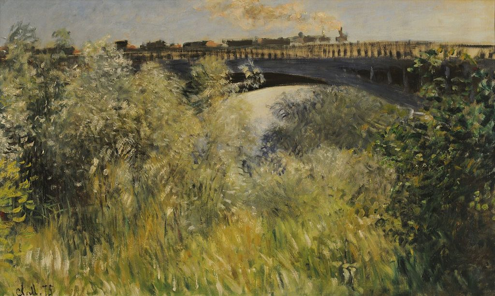

<head>
<meta charset="UTF-8" />
<meta name="keywords" content="drawing, painting" />
<meta name="description" content="drawings by Sunjy" />
<title>Sunjy</title>
<link rel="shortcut icon" type="image/x-icon" href="../../mImages/mCommon/favicon.ico" media="screen" />
<link rel="stylesheet" type="text/css" href="../../mCsses/mCommon/mCssA.css" />
<link rel="stylesheet" type="text/css" href="../../mCsses/mCommon/mCssB.css" />
<link rel="stylesheet" type="text/css" href="../../mCsses/mCommon/mCssC.css" />
<link rel="stylesheet" type="text/css" href="../../mCsses/mCommon/mCssD.css" />
<link rel="stylesheet" type="text/css" href="../../mCsses/mContent/mCssA.css" />
<link rel="stylesheet" type="text/css" href="../../mCsses/mContent/mCssB.css" />
<link rel="stylesheet" type="text/css" href="../../mCsses/mContent/mCssC.css" />
<link rel="stylesheet" type="text/css" href="../../mCsses/mContent/mCssD.css" />
</head>
<script type="text/javascript" src="../../mScripts/mContent/mContentAA.js" /></script>
<script type="text/javascript" src="../../mScripts/mContent/mContentAB.js" /></script>
<script type="text/javascript" src="../../mScripts/mContent/mContentAC.js" /></script>
<script type="text/javascript" src="../../mScripts/mContent/mContentAD.js" /></script>
<script type="text/javascript"></script> 
<script type="text/javascript">
document.write('<div class="mImgAbsolute"></div>');
/*
document.write('<p class="mFontSizeBColor" />From a white paper...</p>');
document.write('<table class="center"><tr><td>');
document.write('');
document.write('</td></tr></table>');
*/
</script>


<script type="text/javascript">
document.write('<p class="mFontSizeBColor" />Le Pont de Argenteuil (The Argenteuil Bridge) </p>');
document.write('<p class="mFontSizeSColor" />Le Pont de Argenteuil (The Argenteuil Bridge) by Claude Monet depicts a bridge with a steam train in the background, and the foreground is dominated by shades of green long grasses and trees. This painting is a study of Monet’s impressionist style characterized by relatively small, thin, yet visible brush strokes, emphasizing a depiction of light in its changing qualities.<br><br>This painting is part of a series of pictures depicting the bridges of the Argenteuil region. From 1871 to 1878, Monet lived at Argenteuil, a village on the right bank of the Seine river near Paris, where he painted some of his best-known works. In 1874, the year of the first Impressionist exhibition, Monet painted the Argenteuil Bridge seven times, and the railway bridge which spans the Seine, four times.<br><br>Oscar-Claude Monet was a founder of French Impressionist painting, and the term “Impressionism” is derived from the title of his painting Impression, “Soleil Levant” or “Impression, Sunrise,” which was exhibited in 1874. Monet adopted a method of painting in which he painted the same scene many times to capture the changing of light and the passing of the seasons. Monet is known for having produced a series of paintings, all versions of the same subject and perspective. Examples include his series of the “Valley of the Creuse” series and his famous series of “Haystacks” and “Water Lilies” paintings.<br><br>From 1883 Monet lived in Giverny, where at his home, he developed a garden landscape that included the lily ponds that would become the subjects of his best-known works. In 1899 he began painting the water lilies, firstly with a Japanese bridge as a central feature, and later in the series of large-scale paintings, with the water lilies as the main feature. This series occupied him for the last 20 years of his life.<br></p>');
document.write('<table class="center" /><tr><td>');
document.write('<br>This painting is part of a series of pictures depicting the bridges of the Argenteuil region. From 1871 to 1878, Monet lived at Argenteuil, a village on the right bank of the Seine river near Paris, where he painted some of his best-known works. In 1874, the year of the first Impressionist exhibition, Monet painted the Argenteuil Bridge seven times, and the railway bridge which spans the Seine, four times.<br><br>Oscar-Claude Monet was a founder of French Impressionist painting, and the term “Impressionism” is derived from the title of his painting Impression, “Soleil Levant” or “Impression, Sunrise,” which was exhibited in 1874. Monet adopted a method of painting in which he painted the same scene many times to capture the changing of light and the passing of the seasons. Monet is known for having produced a series of paintings, all versions of the same subject and perspective. Examples include his series of the “Valley of the Creuse” series and his famous series of “Haystacks” and “Water Lilies” paintings.<br><br>From 1883 Monet lived in Giverny, where at his home, he developed a garden landscape that included the lily ponds that would become the subjects of his best-known works. In 1899 he began painting the water lilies, firstly with a Japanese bridge as a central feature, and later in the series of large-scale paintings, with the water lilies as the main feature. This series occupied him for the last 20 years of his life.<br>" />');
document.write('</td></tr></table>');
</script>


